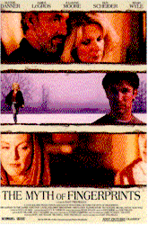
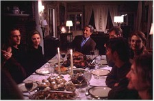
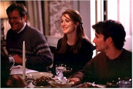
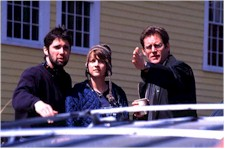

Contents | Features | Reviews | News | Archives | Store |
 |
|
| Movie Credits | Buy It! |
The Myth of Fingerprints
Review by Eddie Cockrell
Posted 3 October 1997
|  | Directed by Bart Freundlich Starring Arija Bareikis, Blythe Danner, Screenplay by Bart Freundlich |
Combining familial whimsy and an oddly tense air of melancholy in equal measure, The Myth of Fingerprints is a movie sure to cast a warm spell over those prepared to enjoy the deliberately tantalizing mysteries of a film endowed with such an appealingly inscrutable title. Reminiscent of every family get-together that never came off as planned, it showcases a strong ensemble cast and an elusive yet purposeful script by a first-time director who exhibits strength and grace in equal measure.
In the days immediately preceding Thanksgiving, four children gather at the remote, snowbound farmhouse of their parents, the broodingly eccentric Hal (Roy Scheider) and the gentle, loving Lena (Blythe Danner) to celebrate the holiday as a family for the first time in three years. There's Mia (Julianne Moore), a tightly-wrapped soul who is first seen on a train aggressively making love to her Significant Other Elliot (Brian Kerwin), a clueless intellectual who is so dim he'll spend the weekend never knowing Mia's playfully wild-eyed younger sister Leigh (Laurel Holloman) is coming on to him. Their superficially cocky brother Jake (Michael Vartan) also brings a lover, the bubbly and lusty Margaret (Hope Davis), who eventually charms the family but whose joi de vivre serves to remind them just how reserved they really are. And then there's the sad-eyed Warren (Noah Wyle), a regular but terminally mopy guy who's let three years of his life trickle by pining for Daphne (Arija Bareikis), the girlfriend he reluctantly separated from after the defining moment – shown in flashback – which will fuel a central conflict of the film. Finally, there's Leonard Morrison (James Le Gros), a childhood friend of the family who never left town, changed his name to Cezanne for reasons never made clear, and now seems to be able to see into Mia's soul with frightening clarity.
Over the course of the holiday they re-acquaint themselves with each other and grapple with the changes that have distanced them. After a gently comic sequence in which the first night is gradually filled with the sounds of lovemaking (much to the lonely Warren's consternation), Mia and Leigh rekindle what appears to be an intense sibling rivalry (with Elliot as a new pawn), Warren tracks down Daphne, and Jake and Margaret bicker.
The film's largest and most provocative gamble comes as the true reason for the breakup between Warren and Daphne is revealed, and how the issue is confronted – but not really resolved. After these and other revelations, the Thanksgiving dinner itself is almost anticlimactic, and this too reflects how these holidays really are: the long-term truths are usually lurking in the background, not exhibited on the main stage.
Filmed in and around a rambling homestead in Maine (Andover and Bethel, to be precise), the movie provides an authentic glimpse into the complex workings of a group of people that has long since ceased to care for one another as friends and seem bound together only by the slender thread of family. If this sounds like every wretched cliché of Thanksgiving rolled into one, well, it is. Bookended by home movie footage that gradually takes on added depths of meaning as the family's individual personalities are revealed, the message is clear: you can go home again if you want to, as long as you realize that the only thing that might not have changed all that much is the house itself.
Freundlich is a director satisfied with using less to tell more. "This is about the characters, not the story, "he has said. "If you trust that you've established your characters well enough, I believe you can allow them to do a lot of things that aren't directly explained in the film. A lot of the time in life, people's behavior isn't directly understandable, or explainable. And I didn't want this movie to be about going from point A to B to C."
With the one-two punch of Mia and Amber Waves, the physically substantial but emotionally frail porno star of the upcoming Boogie Nights, Julianne Moore confirms her status as the bravest actress currently at work in the movies. Equally as comfortable with big-budget Hollywood escapist fare (Assassins, Nine Months, Jurassic Park: The Lost World), she has also been outstanding in risk-taking independent fare (Safe, Short Cuts, Vanya on 42nd Street) and will be seen in the upcoming Coen Brothers film The Big Lebowski and John Turturro's The Hand That Rocks the Cradle. For The Myth of Fingerprints she has created a woman who is at once domineering and completely lost in her own misery. "She doesn't know how to free herself from her anger," Moore has said. "Rather than participate, Mia sort of orbits her family. I don't know that you can root for her and I sort of like that." It is this very attraction to characters well beyond the mainstream, coupled with the facility to tolerate lowest-common-denominator popular entertainments, that give her such breathtaking range. "She is able to communicate an enormous range of emotions and thoughts simply by being still," explains Freundlich. "And when she smiles, she is transformed, her entire person changes. And that was very important." Initially nervous about confronting such a large cast for his very first feature, Freundlich apparently overcame his apprehensions: he and Moore are now living together in Los Angeles and expecting a child.
Another standout in the cast include Wyle, who remembers "I had been reading a lot of scripts, and very few have such three-dimensional characters ... Warren needs to get to a place where he can go on living his life. A key for him getting to that place is his relationship with Daphne." And a key to Wyle's performance is a pivotal flashback involving his father and Daphne at a previous family gathering, a scene he plays with the sympathetic confusion that he brings to the character of Dr. John Carter on television's "E.R." (it must've been something on the set: Wyle is now also involved with a crew member of the film).
The trickiest character in the film is Hal (Scheider), who remains an unapproachable cypher for the entire movie. "I approached Hal as a combination between the written father, my father and me," he explains. "There is a lot of the dark side of me that is cynical and competitive, as there was with my own father. Not many people live up to their parents' expectations. Hal sees how frustrated his children are. He wants to tell them it doesn't matter that much if they live up to his expectations. But he can't. He doesn't have the equipment or the tools to sit down and talk to his children. He realizes that he is of no use to them. He loves his children, but he's lost the capacity to tell them that. He's left it up to his wife for too many years." Perhaps the most complex and vulnerable character he's ever played. Scheider rises to the challenge and gives Hal a vaguely sinister confusion that makes the character both authentic and a metaphor for every father that can't be understood by a grown child.
Also worth singling out are Laurel Holloman (The Incredibly True Adventures of Two Girls in Love) as the frisky Leigh, Brian Kerwin (Jack) as the befuddled Elliot, whose musings on mustard provide a quirky comic relief during one dinner scene, and James LeGros (Drugstore Cowboy, My New Gun) as the sage Cezanne, who adds yet another distinctive character to his gallery of American originals.
Now, about that title: it is, apparently, taken from a Paul Simon song, "All Around the World or The Myth of Fingerprints," the 11th and final track on his 1986 record "Graceland." As elliptical as the film, the song seems to use fingerprints as a metaphor for the universal stamp of humanity ("I've seen them all and man/They're all the same"): you can't really escape who you are and where you come from, and this fate is shared by all of us ("Well, it's not just me/And it's not just you/This is all around the world").
Refreshingly, Freundlich isn't coy about illuminating this: "A fingerprint points to the fact that all these people are genetically related and, in a lot of ways, are very similar to one another. But the children in the family have also developed very differently from one another. The question it presents is: how much are there identities tied to where they grew up and who was around them? And how much of their personalities have they had to create from scratch in order to go on with their lives? That's what fingerprints represent to me – these people's identities: something that on the one hand is genetic, and thus inherited, and yet at the same time is completely unique."
Ultimately, the film will be most affecting for people who not only have had to spend the Thanksgiving holidays with unfamiliar families, but actually enjoyed trying to figure out how those strangers related to one another. Lazy viewers need not apply, as the film has no patience for those who demand easy narratives and sympathetic characters (however, Home for the Holidays is probably still available at your local video store). By tackling this slippery, maddeningly inconclusive topic (dealt with in different ways in at least two other upcoming films, The Ice Storm and The House of Yes) with a steady hand and a sublime ensemble cast, Freundlich has announced himself as a filmmaker of perception and purpose who is unafraid of nuance and character.
Contents | Features | Reviews | News | Archives | Store
Copyright © 1999 by Nitrate Productions, Inc. All Rights Reserved.